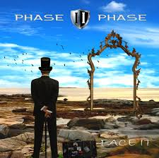
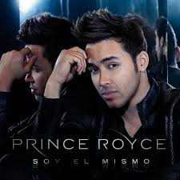
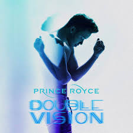
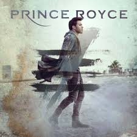
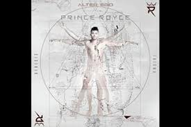

disco_grafia
|
Galeria de imagenes
|
Cancion favorita
|
buscar
Discografía de Prince Royce
Prince Royce (2010)
Su álbum debut que incluye éxitos como "Stand by Me" y "Corazón Sin Cara".

Phase II (2012)
Con canciones como "Las Cosas Pequeñas" e "Incondicional".

Soy el Mismo (2013)
Incluye el popular sencillo "Darte un Beso".

Double Vision (2015)
Su primer álbum en inglés, con colaboraciones de Snoop Dogg y Jennifer Lopez.

Five (2017)
Contiene el éxito "Déjà Vu" con Shakira.

Alter Ego (2020)
Un álbum que muestra su versatilidad musical.
Llamada Perdida (2024)
Su más reciente trabajo, lanzado en febrero de 2024.
#1's (2012)
Un álbum recopilatorio con sus éxitos más grandes.